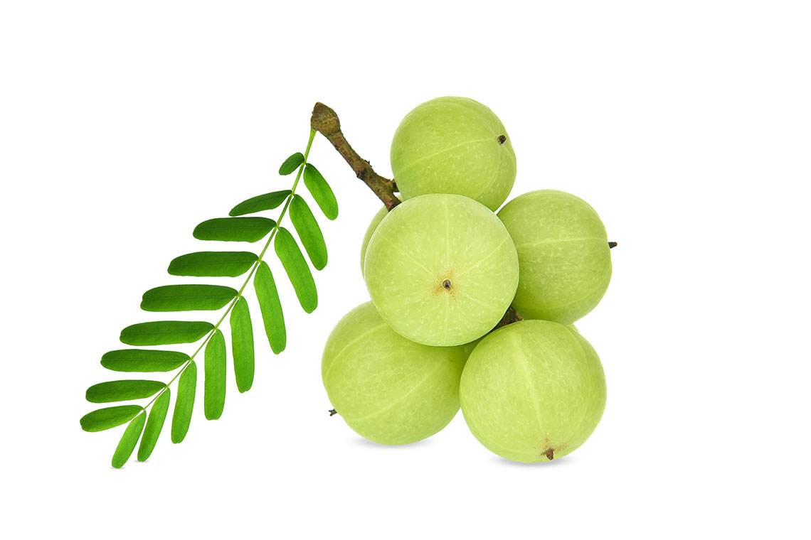

สมุนไพร
น๊าฟ
วัยรุ่น
ไพล
ไพล(Zingiber montanum) เหง้าไพลประกอบด้วยน้ำมันหอมระเหย มีฤทธิ์ต้านการอักเสบและแก้ปวด ใช้บรรเทากลุ่มอาการทางกล้ามเนื้อและกระดูก ตามข้อมูลยาจากสมุนไพรในบัญชียาหลักแห่งชาติ ใช้น้ำมันไพลเป็นส่วนประกอบของครีมและน้ำมันไพล มีข้อบ่งใช้เพื่อบรรเทาอาการเคล็ดยอก หรือสามารถเตรียมน้ำมันไพลไว้ใช้เองจากการทอดด้วยน้ำมันมะพร้าวหรือน้ำมันปาล์ม ใช้ทาและถูเบาๆ บริเวณที่มีอาการ โดยมีข้อควรระวังคือ ห้ามทาบริเวณขอบตา เนื้อเยื่ออ่อน หรือผิวหนังที่มีบาดแผล และไม่ควรใช้กับสตรีมีครรภ์หรือให้นมบุตร และเด็กเล็ก
พริก (Capsicum annuum) ผลพริก มีสรรพคุณแก้เคล็ดขัดยอก รูปแบบการใช้ตามข้อมูลสมุนไพรในบัญชียาหลักแห่งชาติคือ เจล ครีม และขี้ผึ้ง ที่มีสารสกัดจากผลพริกแห้ง โดยควบคุมความแรงของสาร capsaicin ในผลิตภัณฑ์สำเร็จรูป ใช้ทาบริเวณที่ปวด 3-4 ครั้ง/วัน ห้ามใช้ในผู้ป่วยที่แพ้ capsaicin ห้ามสัมผัสบริเวณตา ผิวที่บอบบาง ผิวหนังที่แตกหรือมีบาดแผล เพราะอาจทำให้ระคายเคืองได้
view more...
ขิง
สมุนไพรต้านการอักเสบนอกจากหญิงตั้งครรภ์ที่ควรรับประทานขิงเพื่อเพิ่มน้ำนมแล้ว ทุกคนสามารถนำมาประกอบอาหารเพื่อใช้ฤทธิ์ต้านการอักเสบของขิงกับร่างกายของเราได้ด้วย ขิงเป็นพืชที่มีระบุอยู่ในการแพทย์โบราณของหลายชนชาติว่าช่วยแก้พิษ ลดบวม ขับลม ซึ่งมีงานวิจัยยุคปัจจุบันที่รองรับสรรพคุณแก้หวัด โดยขิงมีคุณสมบัติช่วยเพิ่มการทำงานของระบบภูมิคุ้มกันของร่างกายได้
view more...
ขมิ้นชัน
ลดปวดและต้านการอักเสบ มีผลวิจัยจากภาควิชาเวชศาสตร์ฟื้นฟู คณะแพทยศาสตร์ศิริราชพยาบาล มหาวิทยาลัยมหิดล ว่าขมิ้นชันสกัด สามารถลดอาการอักเสบซึ่งเป็นสาเหตุของการปวดของผู้ป่วยข้อเข่าอักเสบได้ แต่ไม่ควรรับประทานติดต่อกันเป็นระยะเวลานาน ซึ่งข้อมูลส่วนนี้เป็นทางเลือกดูแลตัวเองแก่ผู้ที่มีอาการปวดข้อและเป็นหวัด เพื่อแยกโรคหวัดธรรมดา กับ โรคโควิด-19 ที่มีอาการปวดเมื่อยตามตัวได้ด้วย
view more...
ใบบัวบก
มีฤทธิ์ลดไข้อย่างที่เราทราบกันดีว่าใบบัวบกมีฤทธิ์เย็น แต่อาจจะยังไม่ทราบว่ามีสรรพคุณลดไข้ แก้เจ็บคอด้วย ซึ่งน้ำใบบัวบกมีผู้นำมาสกัดขายอยู่ทั่วไป มีการศึกษาในหนูทดลองพบว่ามีฤทธิ์ลดการอักเสบในช่องปาก ลดการบวม และลดการอักเสบที่ผิวหนังได้ด้วย มีสาร asiaticoside ที่ช่วยสมานแผลผิวหนังเมื่อสกัดผสมในรูปเจล ในอนาคตเราอาจจะเห็นการใช้ใบบัวบกในการรักษาได้กว้างขวางกว่านี้เมื่อมีงานวิจัยรองรับผลของสรรพคุณ
view more...
มะระขี้นก
มะระขี้นกเป็นพืชที่กินง่ายมาก ลวกจิ้มน้ำพริก หรือปั่นสกัดกินแบบผลสด ดื่มหลังอาหารเช้าหรือเย็นวันละ 1 แก้ว จะช่วยลดระดับน้ำตาลของผู้ป่วยเบาหวาน ที่ต้องใช้อินซูลินได้ด้วย ในตำรับยาพื้นเมืองของชาวเอเชีย แอฟริกา และละตินอเมริกา พบการใช้มะระขี้นกเป็นตำรับยาลดไข้ แก้โลหิตเป็นพิษ และบรรเทาอาการปวดข้ออักเสบอีกด้วย
view more...
สาบเสือ
สาบเสือ (Chromolaena odorata) ใบสาบเสือ มีการใช้แบบภูมิปัญญาพื้นบ้าน นำใบสดมาล้างให้สะอาด ขยี้หรือโขลกให้ละเอียดแล้วพอกบริเวณแผลสด สำหรับข้อมูลทางวิทยาศาสตร์มีบางงานวิจัยระบุว่าสารสกัดใบสาบเสือมีฤทธิ์ต่อกลไกการห้ามเลือด โดยลดระยะเวลาการแข็งตัวของเลือด (clotting time และ bleeding time) อย่างไรก็ตามแผลสดเป็นแผลที่ติดเชื้อได้ง่าย ดังนั้นเมื่อห้ามเลือดได้ควรทำความสะอาดแผลให้สะอาด
view more...

ว่านหางจระเข้
เป็นสมุนไพรอีกชนิดหนึ่งซึ่งรู้จักกันเป็นอย่างดี วุ้นในใบมีสารเคมีหลายชนิด วุ้นในใบมีคุณสมบัติรักษาแผล ต่อต้านเชื้อแบคทีเรีย นิยมใช้รักษาแผลไฟไหม้ น้ำร้อนลวก รักษาแผลเรื้อรัง และแผลในกระเพาะอาหาร
view more...

ย่านาง
ย่านางเป็นสมุนไพรรสจืด เป็นยาเย็น มีฤทธิ์ดับพิษร้อน คนจึงนำใบย่านางไปคั้นเป็นน้ำคลอโรฟิลล์ เพื่อเพิ่มความสดชื่น ปรับอุณหภูมิในร่างกาย และยังนำใบย่านางไปช่วยดับพิษไข้ ดับพิษของอาหาร แก้อาการผิดสำแดง แก้พิษเมา แก้เลือดตก แก้กำเดา ลดความร้อนได้ด้วย นอกจากใบแล้ว ส่วนอื่น ๆ ของย่านางก็มีประโยชน์เช่นกัน ทั้ง “ราก” ที่ใช้แก้ไข้พิษ ไข้หัด ไข้ฝีดาษ ไข้กาฬ ไข้ทับระดู “เถาย่านาง” ใช้แก้ไข ลดความร้อนในร่างกาย
view more...
กระชายขาว
สมุนไพรคนไทยอย่างเราๆคุ้นเคยกันดี เพราะเป็นส่วนประกอบของเมนูอาหารหลายอย่าง มีรสชาติที่เผ็ดร้อน มีสรรพคุณ บำรุงเส้นผม ,บำรุงสมองแก้วิงเวียน, บำรุงกำลังให้ความสดชื่น,แก้ริดสีดวง นอกจากนี้ยังมีการวิจัยของมหาวิทยาลัยมหิดลที่รวมมือกับ ศูนย์ความเป็นเลิศด้านชีววิทยาศาสตร์ (TCELS) ได้ศึกษาวิจัย “กระชายขาว” พบว่าสารสกัดจากกระชายขาว ซึ่งมีสารสำคัญ 2 ชนิด ได้แก่ Pandulatin A และ Pinostrobin สารทั้ง 2 ตัวนี้ สามารถทำหน้าที่ยับยั้งการเจริญเติบโตของเชื้อไวรัสต้นเหตุของโควิด-19 ได้รวมถึงลดจำนวนเซลล์ที่ติดเชื้อจาก 100% ให้ลดลงจนเหลือ 0% หากการรับประทานในปริมาณมากเกินไป จะทำให้เลือดหนืด อาจส่งผลให้รู้สึกหมดแรง และป่วยเป็นโรคอื่นๆ ตามมาได้
view more...
มะขามป้อม
มีวิตามินซีที่สูง ใช้เป็นยาแก้ไอ ละลายเสมหะ ช่วยเสริมการทำงานระบบภูมิกันและมีสารสำคัญที่สามารถจับกับขาโปรตีนของไวรัสโควิด-19 และเป็นตัวรับ ACE2 ที่มีบทบาทการผ่านเข้าเซลล์ปอด เนื่องจากมะขามป้อมมีฤทธิ์เย็น เมื่อกินเข้าไปจะทำให้อุณหภูมิในร่างกายลดลง การกินมะขามป้อมต้องกินในปริมาณที่เหมาะส
view more...
